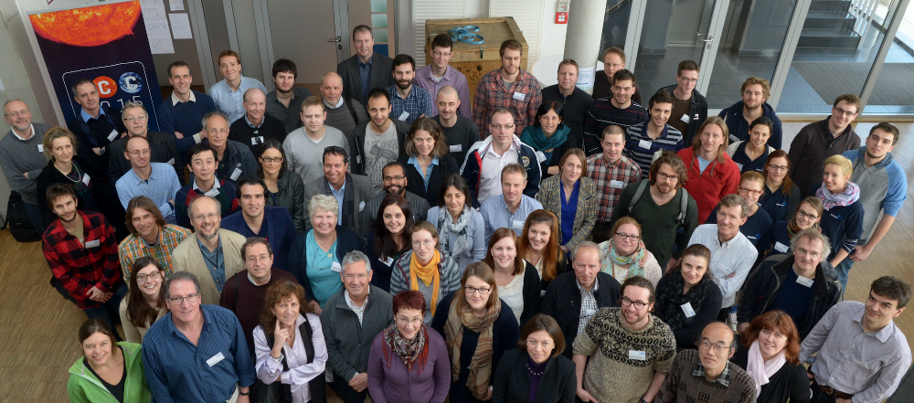

Over the past 4 years, more than 80 scientists from 20 countries across Europe have come together, in an EU-funded COST project, called TOSCA. These scientists came from a whole range of different backgrounds, including Solar and Space Physicists, Climatologists and Atmospheric Scientists, and everyone in-between. Over that time, they produced much on the subject of natural climate forcing mechanisms, including many meetings, workshops, training schools, short-term research grants, original research studies, synthesis reports, special journal editions and outreach materials. But the crown jewel of the collaboration is their newly-launched book, titled 'Earth's climate response to a changing Sun'.
The work, affectionately referred to by the group as a hand-book, is a considerable achievement. It is perhaps the first time a group of such diverse researchers have poured a titanic effort into discussing at both great length and detail, across discipline boundaries, the role of the Sun on Earth's climate, considering cutting-edge data and hypotheses.
Over the years it has been very gratifying to watch as these researchers have come to common ground, evolving their ideas through collaboration, exchange and comradery, until they hit intellectual bedrock. That is really what the book represents: the hard-boiled core of the subject, written to be the most comprehensive and agreed-upon synthesis of this overwhelming and exciting field.
While I am personally sad that TOSCA has essentially disbanded and the project is over, I am ecstatic at the achievements of the group which they have distilled and calcified into their book. It was a pleasure to be part of their group, which gave me many opportunities for developing my research. To see my contribution to the book have a look at Chapter 4.7, written with Dr. Jasa Calogovic, and modified with feedback from by Professors Jon-Egil Kristjansson, Yoav Yair, Jeffrey Pierce, and Brian Tinsley. I will likely post a synthesis of this material in the future.
For more information about the book, or to place and order, check out the flyer. Or for more things TOSCA, drop by their Youtube channel and see their videos, or follow them on Twitter @ghost_TOSCA.
Go Top
comments powered by Disqus